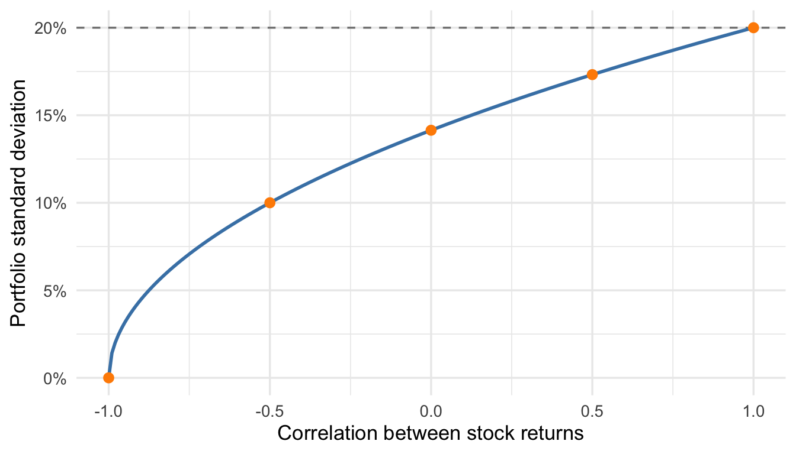
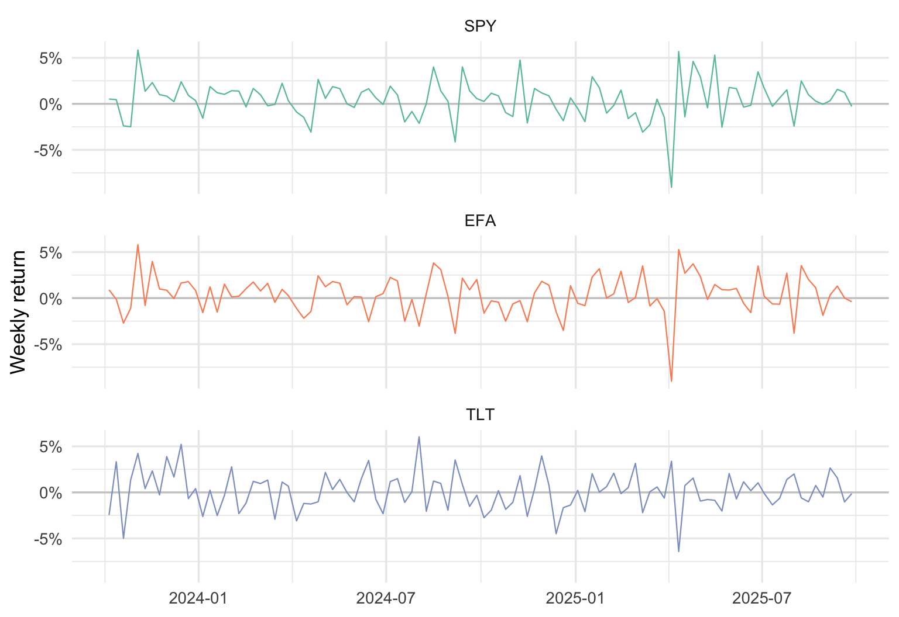
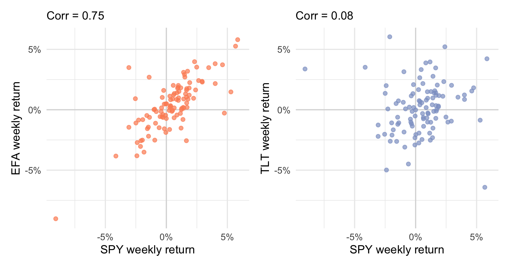
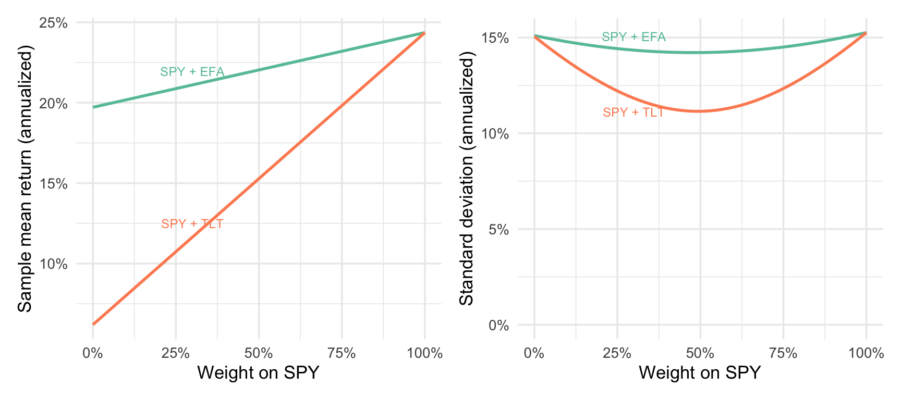
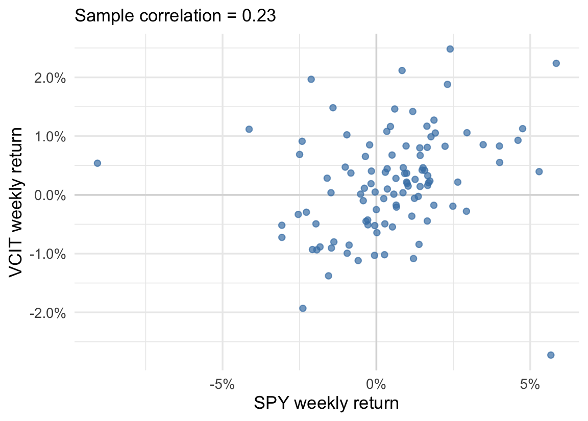
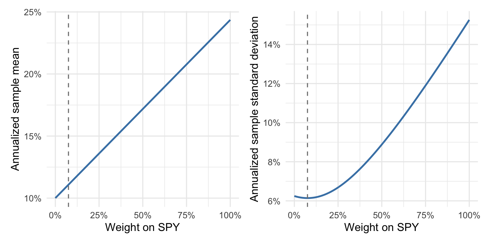
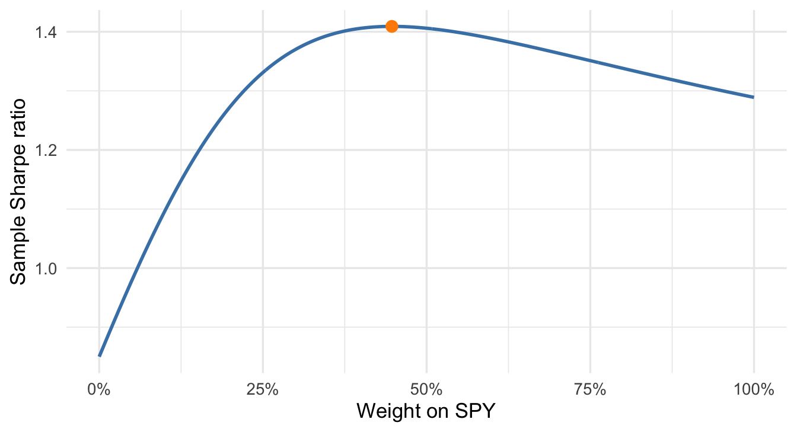

| Correlation | Portfolio standard deviation |
|---|---|
| 1.0 | 20.0% |
| 0.5 | 17.3% |
| 0.0 | 14.1% |
| -0.5 | 10.0% |
| -1.0 | 0.0% |
14 Combining Random Variables
Often we’re interested in a particular combination or combinations of random variables. A firm’s forecasted profit is the difference between forecasted revenue and costs. A portfolio’s return is a weighted average of the returns of the assets it holds, with weights given by the fractions invested in each asset. In each case we combine random variables to form a new one, and that combination is linear: we add or take differences between two random variables, possibly after scaling them (as in the portfolio example). The expected value of a linear combination follows from the expected values of its components, regardless of their dependence. Its variance also depends on their covariance, which we related to correlation in the last chapter.
14.1 Portfolios as linear combinations
Let’s start with one of the most salient examples of a linear combination: building a portfolio by allocating our capital across two or more investments. Suppose we invest a fraction \(w\) of our money in one asset and the remaining \(1-w\) in another. Let \(R_1\) and \(R_2\) denote their returns over the next week. The portfolio return is
\[ R_p=wR_1+(1-w)R_2. \]
The return on our total investment is a weighted average of the two asset returns. The fractions invested are the portfolio weights. For example, a 60/40 portfolio earns \(0.60(0.02)+0.40(-0.01)=0.008\), or 0.8%, in a week when the first asset gains 2% and the second loses 1%.
Definition 14.1: Linear combination of random variables
A linear combination of random variables \(X\) and \(Y\) has the form
\[ Z=aX+bY+c, \]
where \(a\), \(b\), and \(c\) are constants. We scale each variable, add the results, and shift the total by \(c\).
The portfolio has \(a=w\), \(b=1-w\), and \(c=0\). Profit provides another example: if \(X\) is revenue, \(Y\) is variable cost, and fixed costs are $100,000, then profit is \(X-Y-100{,}000\). Both revenue and variable costs are uncertain; the fixed cost shifts every possible profit by the same amount.
14.2 The mean and variance of a linear combination
The mean of a sum follows the intuitive rule: Averages add. If average monthly revenue from our west coast office is $1m, and average revenue from our east coast office is $2.3m, then our total average revenue across the two offices must be $1m + $2.3m = $3.3m. In terms of expected values, this means \[ E[X + Y] = E[X] + E[Y] \] Coupled with our rules about linear transformations of a single variable — the shifting and scaling we did for data and for random variables — we get the following general rule for the expected value of a linear combination of two variables:
NoteThe mean of a linear combination
For random variables with finite expected values,
\[ E[aX+bY+c]=aE[X]+bE[Y]+c. \]
We combine the expected values with the same weights and constant as the random variables. The rule holds whether or not the variables are independent.
For our portfolio, this just means that our expected returns for the portfolio are a weighted average of the expected returns of each investment:
\[ E[R_p]=wE[R_1]+(1-w)E[R_2]. \]
Variance and standard deviation behave quite a bit differently. If the assets in our portfolio tend to move together, they will often be up or down at the same time. Alternatively, if they tend to move in opposite directions then they hedge each other, providing more predictable returns — lower portfolio variance. This effect is measured by the size of the covariance between the two variables in the linear combination:
NoteThe variance of a linear combination
For random variables with finite variances,
\[ \operatorname{Var}(aX+bY+c) =a^2\operatorname{Var}(X)+b^2\operatorname{Var}(Y) +2ab\operatorname{Cov}(X,Y). \]
We multiply each variance by its squared weight and add the covariance term. The constant \(c\) changes the location but not the spread. If the variables are uncorrelated, the covariance term is zero and only the first two terms remain. Independence is sufficient for this simplification, as we saw in Chapter 13.
The signs of the weights matter. For a sum, positive covariance increases variance. For a difference, \(a=1\) and \(b=-1\), so positive covariance reduces variance: when revenue and costs rise together, part of their movement cancels in profit. In either case we take the square root of the variance to obtain the standard deviation.
The same algebra holds for sample summaries. If we create a data column \(z_i=ax_i+by_i+c\), then
\[ \bar z=a\bar x+b\bar y+c,\qquad s_z^2=a^2s_x^2+b^2s_y^2+2ab s_{xy}. \]
These are the sample mean and variance of the combined column, with \(s_{xy}\) the sample covariance from Chapter 13. We can therefore compute a portfolio’s historical summaries directly from the two assets’ sample summaries. Using those historical quantities to describe future returns requires a further assumption that the past is informative about the future.
14.3 Portfolio risk and diversification
For the two-asset portfolio, recall that the mean rule gives
\[ E[R_p]=wE[R_1]+(1-w)E[R_2]. \]
Expected return is the weighted average of the assets’ expected returns. The variance rule gives
\[ \operatorname{Var}(R_p) =w^2\operatorname{Var}(R_1)+(1-w)^2\operatorname{Var}(R_2) +2w(1-w)\operatorname{Cov}(R_1,R_2). \]
Portfolio variability depends on the covariance as well as the individual variances. We use standard deviation as a measure of investment risk here: it describes variability in returns, including both gains and losses.
Suppose two hypothetical stocks each have a 10% expected annual return and a 20% annual standard deviation. An equal-weight portfolio also has a 10% expected return. Using the identity \(\operatorname{Cov}(R_1,R_2)=\operatorname{Corr}(R_1,R_2)(0.20)(0.20)\) from Chapter 13, its variance is
\[ \operatorname{Var}(R_p)=0.02+0.02\operatorname{Corr}(R_1,R_2). \]
Only the correlation varies in this example. The table and curve show how lower correlation reduces the standard deviation of the equal-weight portfolio while leaving expected return unchanged.

At correlation \(-1\), the equally sized deviations cancel exactly, so this particular portfolio has no variability. Perfect negative correlation is not necessary for diversification, the reduction in variability from combining assets whose returns do not move perfectly together. Even with a positive correlation of 0.5, this portfolio has lower standard deviation than either stock alone. With unequal asset variances, the weights also affect how much reduction we obtain.
14.3.1 Choosing between two diversifiers
The portfolios data record weekly returns on three exchange-traded funds over the two years from October 2023 through September 2025 (Three-Asset Weekly Return and Price Series, October 2023–September 2025 2025). An exchange-traded fund (ETF) holds a basket of assets and trades like a single stock, so buying one share buys a slice of the whole basket. SPY holds the S&P 500 and is a standard stand-in for the U.S. stock market — it’s the same market series we have used since the chapter on describing distributions. EFA holds large stocks from developed markets outside North America: Europe, Japan, Australia. TLT holds long-term U.S. Treasury bonds, government debt with twenty or more years to maturity. Each return is the percent change in the fund’s value from one Friday close to the next, expressed as a proportion, for 104 weeks.
Suppose your entire portfolio is currently the U.S. market — all SPY — and you’ve decided to diversify by adding exactly one of the other two funds. Which one? Figure 14.2 plots the three return series, and the summary table follows.

Technical detail 14.1: Annualized summaries
We multiply the weekly mean by 52 and the weekly standard deviation by \(\sqrt{52}\). The first is an annualized arithmetic mean, not the compounded return over a year. The standard-deviation scaling assumes uncorrelated weekly returns with a common variance.
| Fund | Holds | Sample mean return (annualized) | Standard deviation (annualized) |
|---|---|---|---|
| SPY | U.S. stocks (S&P 500) | 24.4% | 15.3% |
| EFA | International developed-market stocks | 19.7% | 15.1% |
| TLT | Long-term U.S. Treasury bonds | 6.2% | 15.1% |
All three funds carried nearly identical risk over this window — about 15% a year — and EFA’s sample mean return of 19.7% is more than three times TLT’s 6.2%. Why would anyone choose TLT?
Because the mean and standard deviation in the table describe each fund held on its own, and you aren’t going to hold either fund on its own — you’re going to mix it with SPY, and the portfolio variance formula needs an input the table doesn’t show: the covariance between each candidate and the fund you already hold. Figure 14.3 supplies it.

EFA is a stock fund, and international stocks catch most of the same news that moves U.S. stocks: a week that’s bad for SPY is usually bad for EFA too. Its correlation with the market is 0.75. TLT’s correlation is 0.08 — Treasury bonds respond to interest rates and inflation news, not corporate earnings, and over this window their moves were almost uncorrelated with the stock market’s.
Now run both candidate portfolios through the rules of Section 14.2, using the sample means, standard deviations, and covariances as inputs. Figure 14.4 shows the sample mean return and risk of each mix as the weight on SPY sweeps from 0 to 1.

The left panel shows that at every weight below 100% SPY, the EFA mix has the higher sample mean return, as expected. The right panel is more interesting. The SPY + EFA curve barely bends. The high degree of correlation means that the two ETFs tend to move together and the only diversification benefit comes from the weeks they don’t. No weighting of SPY and EFA gets the portfolio’s risk below about 14.2%. The SPY + TLT curve declines faster and bottoms out lower, near 11.1% at roughly an even split. Their low correlation allows much more of their variability to offset in the portfolio.
There is no universally right portfolio. The right choice depends on what we are optimizing for, but whatever the goal, the comparison should account for both sample mean return and risk. One way to compare the options is to fix a risk target and ask what sample mean return each can deliver. For example, take 14.2% — the lowest risk the EFA pairing can reach at any weight. The best EFA mix at that risk earns 21.9%. The TLT mix that hits the same risk holds 92% SPY and earns 22.9%:
| Portfolio | Sample mean return | Standard deviation |
|---|---|---|
| 100% SPY | 24.4% | 15.3% |
| Best SPY + EFA mix at 14.2% risk (48% SPY) | 21.9% | 14.2% |
| SPY + TLT mix at the same risk (92% SPY) | 22.9% | 14.2% |
At the same level of risk, the TLT portfolio delivers about 1.0 percentage points more sample mean return. And if you want less risk than 14.2%, only the TLT portfolio can get there — all the way down to 11.1% if you like.
14.4 Comparing Sharpe ratios: SPY and VCIT
We now combine SPY with another bond fund, VCIT, which holds intermediate-term investment-grade corporate bonds. Our data contain 104 weekly returns from October 06, 2023 through September 26, 2025, using adjusted closing prices that account for dividends and splits. Each row records the two returns for the same week, expressed as proportions.
The scatterplot shows how the weekly returns move together. The accompanying table reports the two funds’ historical means and standard deviations on an annualized scale.

| Fund | Mean return | Standard deviation |
|---|---|---|
| SPY | 24.4% | 15.3% |
| VCIT | 10.0% | 6.2% |
SPY had both a higher mean return and a higher standard deviation than VCIT during this period. Their sample correlation was 0.23, so the returns did not move closely together. A mixture can therefore have lower variability than either fund alone, although the attainable reduction depends on their different scales.
14.4.1 Choosing the weights
Let \(w\) be the weight on SPY. We restrict it to the interval from 0 to 1, so both weights are nonnegative and sum to 1. For each allocation we compute the historical portfolio mean and standard deviation using the sample rules above. These calculations describe a portfolio rebalanced to the specified weights each week, before trading costs. The curves show how the summaries change as we increase the stock-fund weight.

The minimum-standard-deviation portfolio holds 7.5% in SPY and 92.5% in VCIT. Its annualized sample standard deviation is 6.14%, compared with 6.25% for VCIT alone. Adding a small stock allocation reduces variability even though the stock fund is more variable on its own. Beyond this allocation, increasing the stock weight raises both the historical mean and standard deviation.
14.4.2 Return per unit of variability
Minimizing standard deviation uses no information about the mean return. If we want to compare return above a risk-free benchmark relative to variability, we can use the Sharpe ratio (Sharpe 1966).
Definition 14.2: The Sharpe ratio
For a portfolio with positive standard deviation and a constant risk-free return \(r_f\) over the same period,
\[ \text{Sharpe ratio}=\frac{E[R_p]-r_f}{\operatorname{SD}(R_p)}. \]
The numerator is expected return above the risk-free benchmark. Dividing by standard deviation expresses that excess return per unit of variability.
For the historical comparison, we substitute each portfolio’s sample mean and standard deviation. We use the data’s average Treasury-bill rate as a constant benchmark, 4.7% annualized. The curve shows the resulting sample Sharpe ratio for every allocation.

The maximum occurs at 44.7% in SPY, with a sample Sharpe ratio of 1.41. This portfolio accepts more variability than the minimum-standard-deviation allocation in exchange for a higher historical mean. The table compares both allocations with the individual funds.
| Allocation | SPY weight | Mean return | Standard deviation | Sharpe ratio |
|---|---|---|---|---|
| All VCIT | 0.0% | 10.0% | 6.2% | 0.85 |
| Minimum standard deviation | 7.5% | 11.1% | 6.1% | 1.04 |
| Maximum sample Sharpe ratio | 44.7% | 16.4% | 8.3% | 1.41 |
| All SPY | 100.0% | 24.4% | 15.3% | 1.29 |
We selected these weights using the same observations that supply the reported performance. The maximizing allocation therefore describes this sample; it does not establish which allocation will have the highest Sharpe ratio in future returns. Over this window, the minimum-variability mix and the maximum-Sharpe mix answer different questions and assign different weights to the same two funds.
14.5 Practice
Exercise 14.1: Combining uncertain quantities
- A firm’s revenue has standard deviation $200,000, and its variable costs have standard deviation $120,000. Their correlation is 0.6. Find the standard deviation of revenue minus variable costs. What would change if the correlation were zero?
- Two assets each have a standard deviation of 20%. An equal-weight portfolio has standard deviation 10%. Find their correlation.
- In the SPY–VCIT example, why does the allocation that minimizes standard deviation differ from the one that maximizes the sample Sharpe ratio?
- Suppose a portfolio has expected annual return 8%, annual standard deviation 12%, and an annual risk-free benchmark of 3%. Compute its Sharpe ratio. Explain which inputs would change if the benchmark rose to 4% while the return distribution stayed the same.
Solution
- In thousands of dollars, the variance is \(200^2+120^2-2(0.6)(200)(120)=25{,}600\), so the standard deviation is $160,000. With zero correlation the covariance term vanishes, giving a standard deviation of about $233,238.
- The equation \(0.10^2=0.02+0.02\operatorname{Corr}\) gives a correlation of \(-0.5\).
- Minimizing standard deviation uses the two variances and their covariance. The Sharpe ratio also uses the mean returns and the benchmark. In this sample its maximizing allocation gives more weight to SPY’s higher mean return and accepts a higher standard deviation.
- The Sharpe ratio is \((0.08-0.03)/0.12\approx0.417\). With the higher benchmark, only the excess-return numerator changes; the ratio becomes \((0.08-0.04)/0.12\approx0.333\).
Data used in this section
- Three-Asset Portfolio Series supplies SPY returns and the Treasury-bill benchmark.
- Weekly Asset Returns supplies VCIT returns over the same dates.